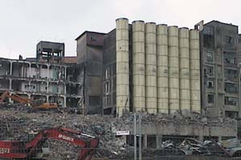

|  |
Ampliar
el foro, en una experiencia colectiva de la comunidad virtual. Enviar
imágenes y textos de historias de fábricas de arquitectura
industrial en proceso de destrucción o arquitecturas industriales
deshabitadas, con las que el participante tenga alguna vinculación
por vecindad, parentesco, temática, recuerdos, etc. Para así
ampliar y documentar las diferentes historias. En la exposición se mantendrá
un puesto de ordenador abierto al público para su participación en el
que se tratará de que partícipe tanto la comunidad internacional como
la comunidad local, convocando e invitando previamente a los artistas
del lugar que hagan su intervención, que quedará registrada, para contribuir
a la extensión plural del medio.
|